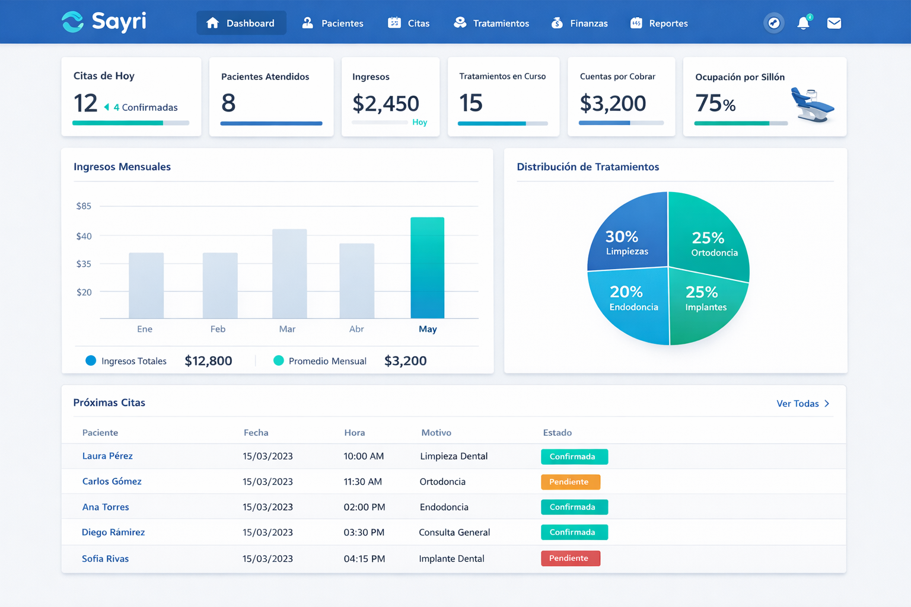
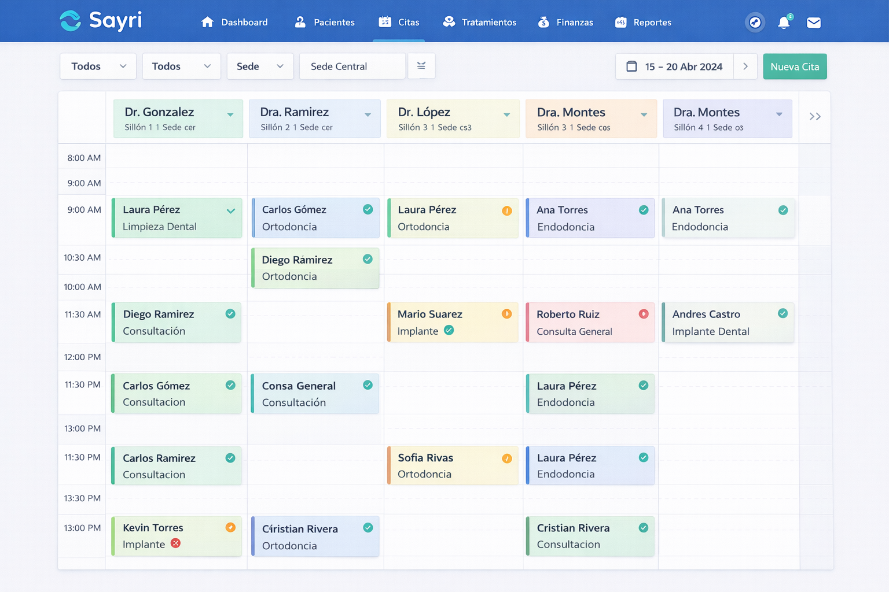
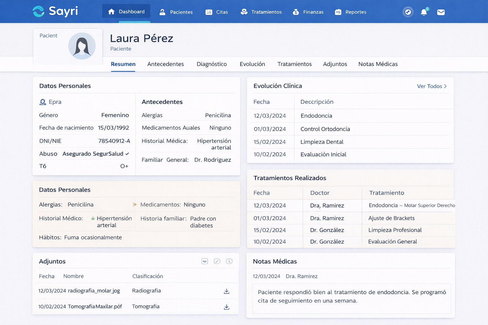
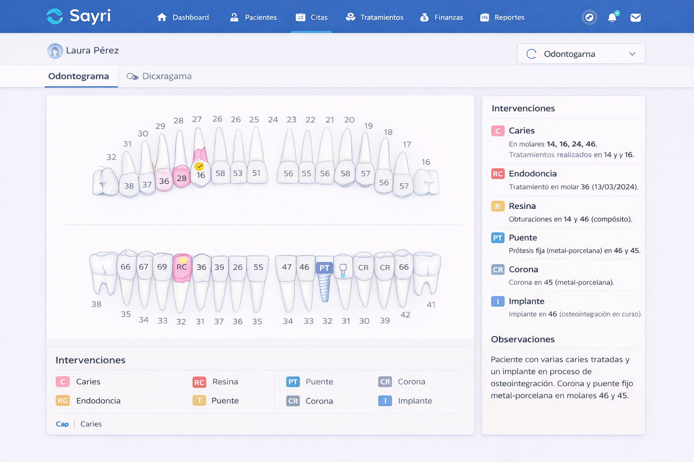
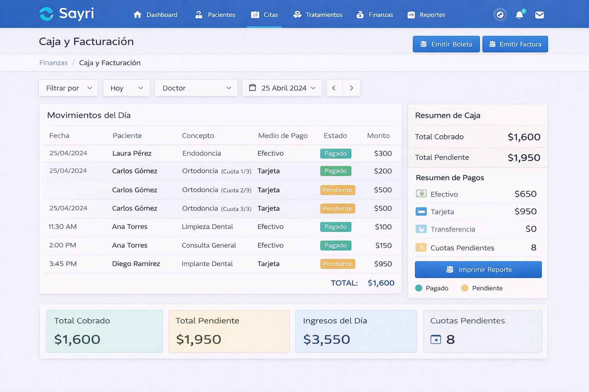
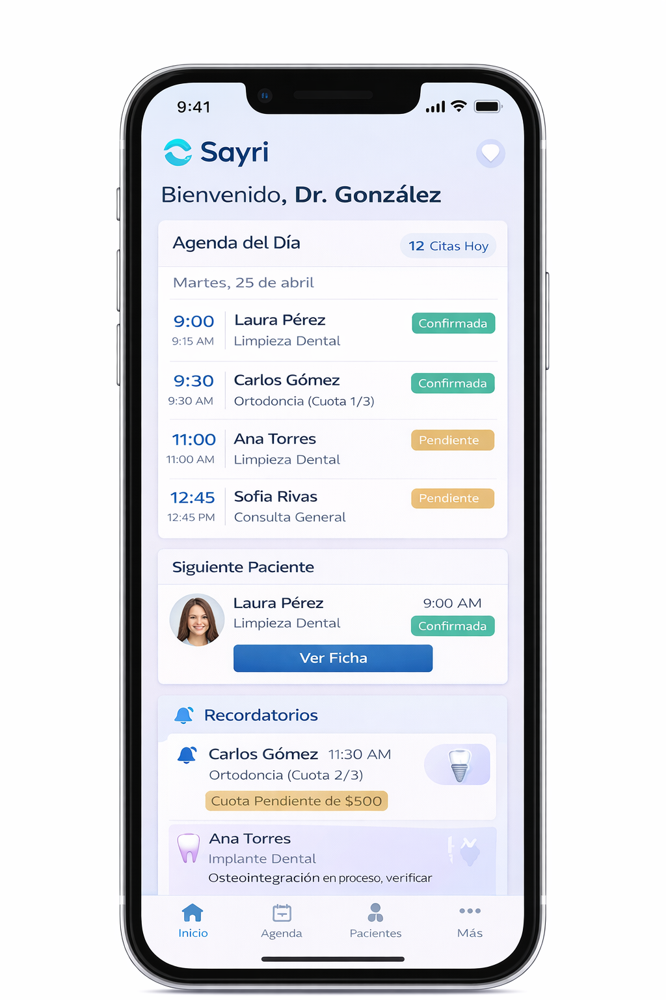

Sayri para Clínicas y Consultorios Odontológicos
Digitaliza agenda, historias clínicas, planes de tratamiento y facturación en una sola plataforma.
Imágenes de referencia
Capturas de Sayri para odontología con vistas clave de gestión clínica, administrativa y móvil

Dashboard general
Vista principal del sistema con indicadores de operación, accesos directos y resumen general de la clínica.

Agenda clínica
Programación de citas con control de horarios, pacientes y seguimiento diario de la atención clínica.

Historia clínica
Ficha clínica digital con antecedentes, datos del paciente, seguimiento y detalle del tratamiento odontológico.

Odontograma digital
Registro visual de piezas dentales, diagnósticos y procedimientos para una evaluación clínica más precisa.

Caja y facturación
Control de cobros, cuotas, saldos y emisión de comprobantes dentro del mismo flujo administrativo.

Versión móvil
Acceso desde celular para consultar información clave y mantener continuidad operativa fuera del escritorio.
Problemas frecuentes que resolvemos
Puntos críticos que frenan la operación clínica y la experiencia del paciente
Agenda desordenada
Choques de horarios, ausencias y baja ocupación de sillones por falta de control centralizado.
Historia clínica incompleta
Odontogramas y evolución clínica en archivos dispersos que dificultan continuidad de atención.
Caja sin trazabilidad
Pagos, saldos y avances de tratamiento sin visibilidad financiera para dirección y administración.
Comunicación reactiva
Confirmaciones y recordatorios manuales que consumen tiempo y elevan el porcentaje de inasistencias.
Facturación separada
Boletas y facturas fuera del flujo clínico, con reprocesos y riesgo de errores operativos.
Sin indicadores claros
Dificultad para medir productividad, rentabilidad por servicio y desempeño por especialista.
La solución Sayri
Un ecosistema integrado para gestión clínica, administrativa y comercial
Operación clínica
Agenda por doctor y sillón, historia clínica odontológica, odontograma y evolución por tratamiento.
Gestión financiera
Presupuestos, planes de pago, control de caja y comprobantes electrónicos en el mismo flujo.
Relación con pacientes
Recordatorios automáticos, seguimiento post consulta y trazabilidad de cada contacto del paciente.
Módulos principales
Funciones clave para clínicas nuevas, en crecimiento o multisede
Gestión clínica diaria
- Agenda inteligente con vista por sede, especialista y sillón.
- Historia clínica odontológica con odontograma y anexos.
- Planes de tratamiento por fases con seguimiento de avances.
- Registro de diagnósticos, procedimientos e indicaciones.
- Alertas de controles y citas de continuidad.
- Ficha única del paciente con trazabilidad completa.
Gestión administrativa y comercial
- Presupuestos odontológicos convertibles a tratamiento.
- Cobros por cuota, saldo y método de pago.
- Caja diaria, arqueos y reportes de ingresos por servicio.
- Facturación electrónica integrada al proceso clínico.
- Comisiones por especialista y análisis de productividad.
- Dashboard gerencial con indicadores de operación y ventas.
Por qué elegir Sayri
Beneficios concretos para dirección, administración y equipo clínico
Más productividad por sillón con mejor organización de agenda.
Información clínica protegida con permisos por rol y trazabilidad.
Procesos más rápidos desde la cita hasta el cobro y la facturación.
Soporte cercano para implementación, capacitación y mejora continua.
Adaptado a distintas especialidades
Sayri se configura según el flujo clínico de tu servicio dental
Odontología general
Control de diagnóstico, plan, avance y seguimiento integral del paciente.
Ortodoncia
Programación por controles, cuotas periódicas y evolución del tratamiento.
Rehabilitación oral
Gestión por fases clínicas y coordinación con laboratorio cuando aplique.
Cirugía e implantes
Trazabilidad de procedimientos, controles postoperatorios y resultados.
Preguntas frecuentes
Resolvemos dudas habituales antes de implementar Sayri
¿Cuánto demora la implementación?
Depende del tamaño de la clínica y la migración requerida. Definimos un plan por etapas para salir a producción sin frenar la atención.
¿Se puede migrar información de otro sistema?
Sí. Evaluamos estructura y calidad de datos para migrar pacientes, historias y saldos relevantes.
¿Funciona para una sola sede?
Sí. Sayri funciona desde consultorios pequeños hasta operaciones con varias sedes y equipos simultáneos.
¿Qué incluye el soporte?
Capacitación inicial, acompañamiento funcional y atención de incidencias para el equipo clínico y administrativo.
¿Puedo emitir comprobantes desde el sistema?
Sí. La facturación se integra al proceso de cobro para evitar doble registro y errores manuales.
¿Podemos solicitar ajustes?
Sí. Revisamos mejoras por prioridad de negocio para mantener el sistema alineado a tu operación.
Solicita una demo de Sayri
Conoce cómo ordenar tu operación odontológica y crecer con mejor control
Equipo comercial Sayri
999 669 634
yuripc@atic.pe